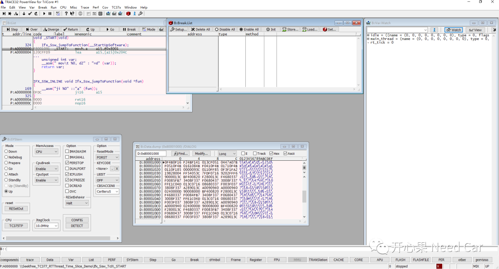
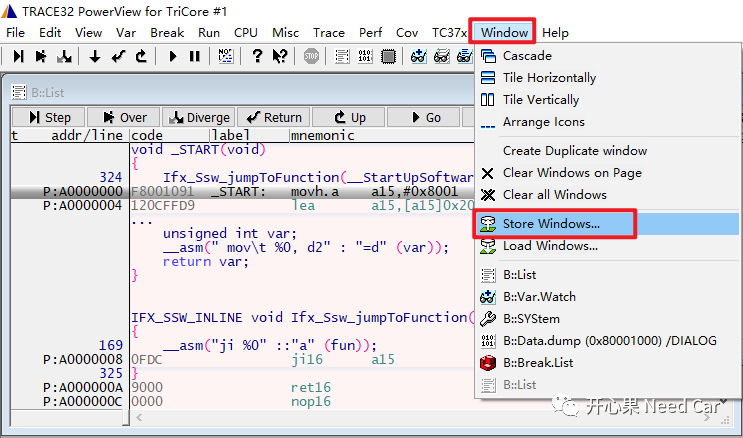
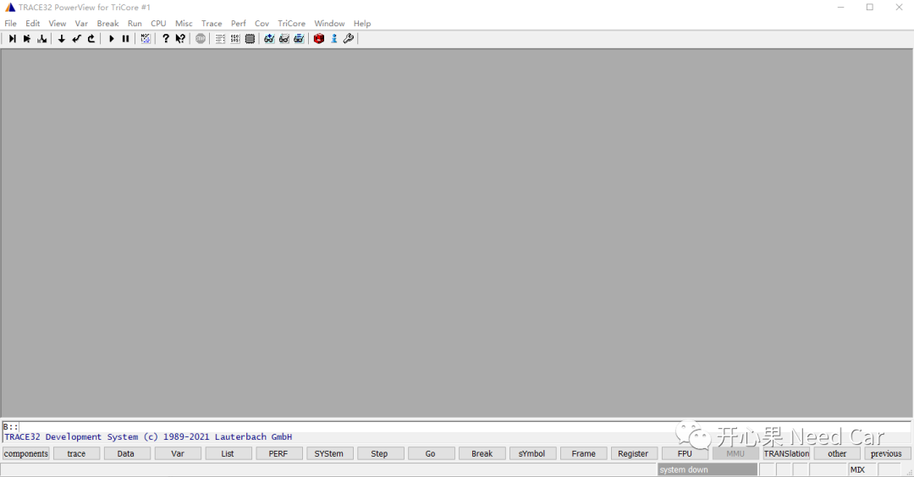
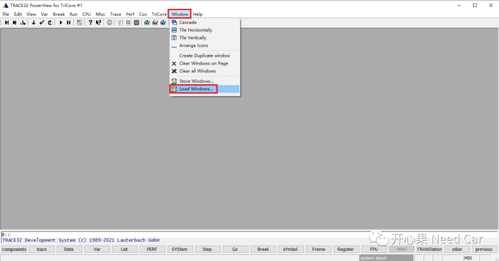
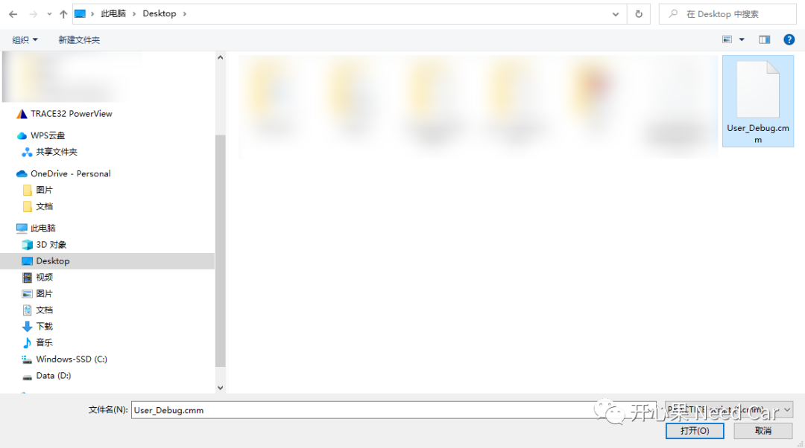
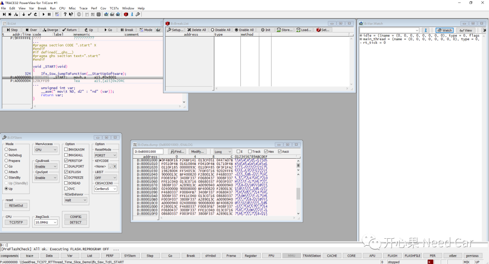
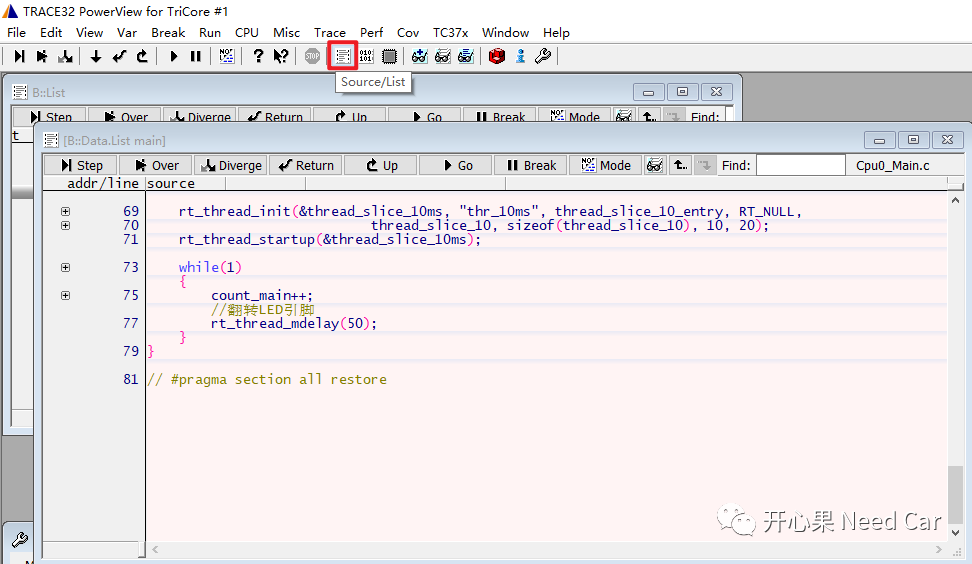
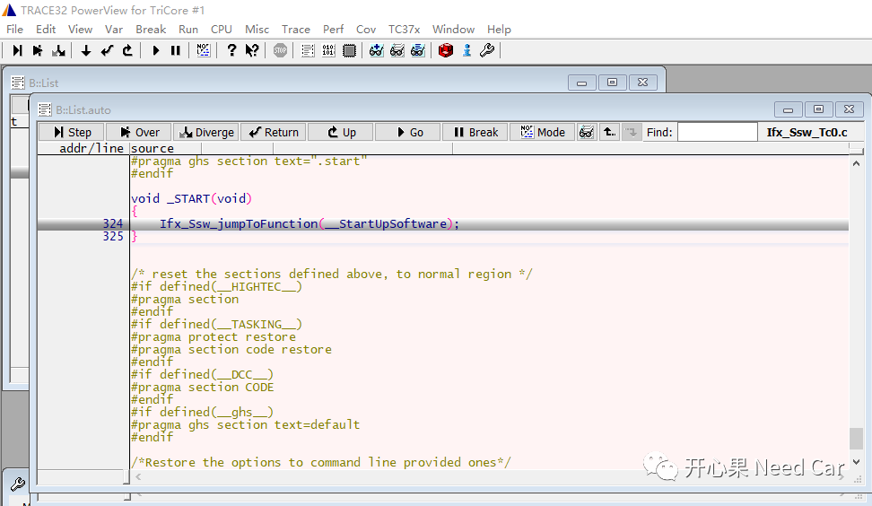

开心果 Need Car · 2023-06-18T09:14:00+08:00 · 微信原文
工程开发中，调试手段的丰富性决定着bug问题解决的快慢。所以，开发工程师怎能不掌握一些基础的调试技巧呢。本文，继续输出一些TRACE32调试的使用技巧：如何加载自定义调试界面。
1、调试需求
调试时，一些观测量界面（B::Var.Watch）、系统界面（B::SYStem）、程序运行位置界面（B::List）、内存界面（B::Data.dump）设置好以后，如何能在下次启动TRACE32时，直接加载呢？如下界面，想在下次打开TRACE32时，直接导入该界面，不想每个界面手动配置。

2、具体操作
（一）保存用户配置界面
1、具体操作：Window->Store Windows...


4、加载存储的配置文件，Window->Load Windows...



3、程序debug哪里了
有时，程序开的调试界面太多，尤其单步调试时，调试进度不知去哪里了，怎么办呢？答：单击Source/List按钮，即可显示程序所在位置。
1、单击Source/List按钮前，不知程序所在位置，如下所示：


往期精彩回顾